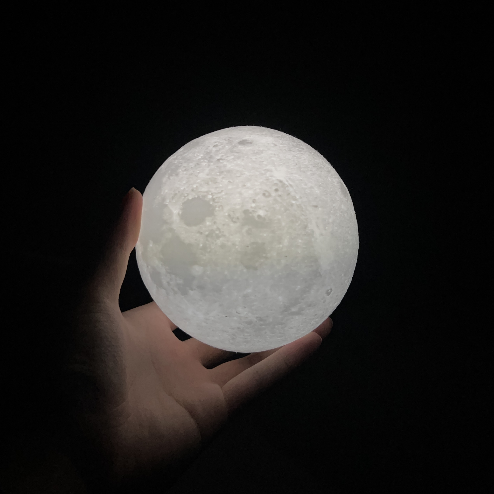

Ethan Yang
Hello! My name is Ethan and I'm a first year Computer Science major at Cal Poly SLO. In my free time I enjoy hiking, playing beach volleyball, listening to music, spending time with friends, taking pictures, editing videos, and working on coding projects.
I mostly code in Python with proficiency in HTML and CSS.